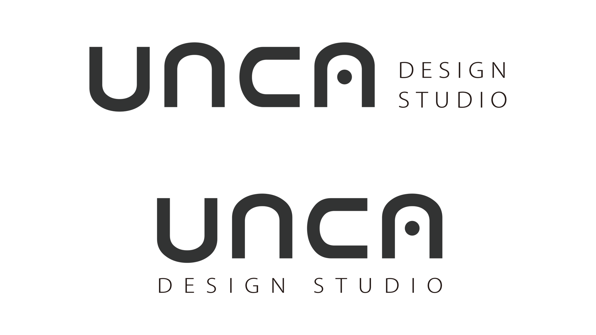
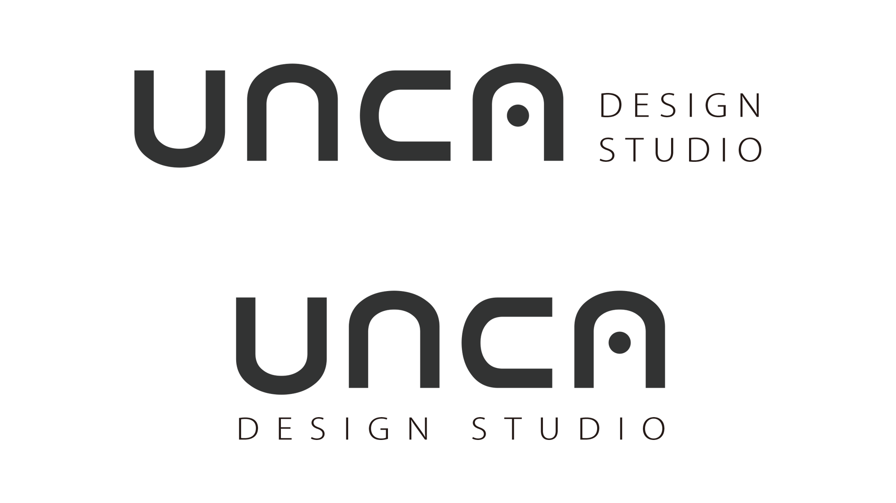

unca
これはぼくのVisionそのもの。
どんなデザイナーで在り続けたいか、どんなでいたいか。それらをデザイン事務所を設立したと仮定したCI / VIを制作しました。
"unique casts"
私たちは一人ひとりが "役者" であり "プレイヤー" です。
おのおのには個性があるだけでなく、それらを発揮する手段と表現力を持ち合わせています。
チームプレーも欠かせない
ロゴには統一的で、かつ、ひとつひとつが自立
 
